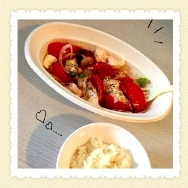
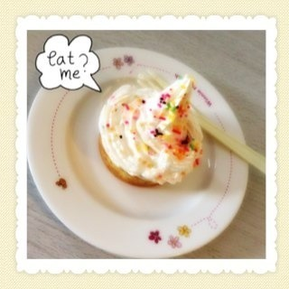
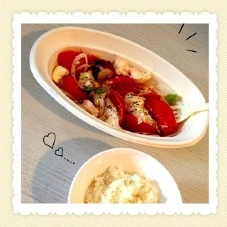
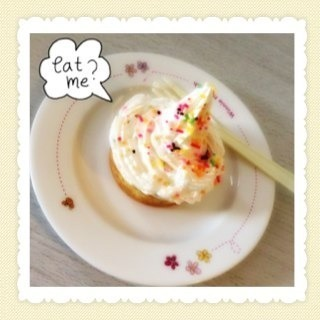

2013/0119Sat（´-`）.｡oO(かずみん×134
こんばんわ^ ^
いつも応援ありがとうございます！
コメントを見てたら
黒髪好きな方が沢山いました〜( ´ ▽ ` )
私も黒髪が好きなので嬉しかったです！
--------
17日にデジモンのゲームが届いて
ちょっとですがやってました！
ストーリー性があるので
無印好きだった方は、あの名シーンが
蘇ってくると思いますよ♪
パルモンの声可愛すぎる\(//∇//)\
また進めたら書きますね( ´ ▽ ` )ﾉ
そして今日はまたひなちゃんと
パンケーキを食べに行きました！
うちらは色々な所に行って
グルメリポートの
練習をしてます！←嘘
ちなみにエッグスンは
1年以上行ってません（´-`）.｡
今日の写メ
ちょっと腹立つ顔ですね。笑
-------
あ、17日のデジモンが届いた日ですね
その日にスーパーへ行ったら
モッツァレラチーズを見かけて
カプレーゼを食べたくなり、
自分でちょっとした料理をしました。

タコとモッツァレラチーズと
トマトのマリネ
私はバジルが大好きなので
かけまくりました♪
あとは大判焼きにホイップクリームで

簡単な物ですみません(>_<)
でもとっても美味しかったです！
真夏ブログをみたら
真夏はとっても料理が上手で
羨ましいなぁと思いました(^o^)
あと美雲ちゃんブログに
私のことが書いてあって
嬉しかったです\(//∇//)\
美雲ちゃんは実は私が乃木坂で
尊敬してる人NO.1です！！
可愛くて頭も良くて、
英語もペラペラで、
歌もダンスも上手くて、
とーっても優しい(*^o^*)！！
優しさの塊でできてるの！！！
美雲ちゃんと話してると
なんだか安心するのです( ´ ▽ ` )
今度私も美雲ちゃんと
写メ撮らなくちゃ(*^v^*)
お楽しみに〜♪
-----
それでは、今日はこの辺で！
明日は朝からお仕事(^o^)
ガジ頑張ります！
センター入試1日目、
お疲れ様でした。
明日も頑張って下さい。
みなさんの桜が咲きますように...。
おやすみなさい...☆
いつも応援ありがとうございます！
コメントを見てたら
黒髪好きな方が沢山いました〜( ´ ▽ ` )
私も黒髪が好きなので嬉しかったです！
--------
17日にデジモンのゲームが届いて
ちょっとですがやってました！
ストーリー性があるので
無印好きだった方は、あの名シーンが
蘇ってくると思いますよ♪
パルモンの声可愛すぎる\(//∇//)\
また進めたら書きますね( ´ ▽ ` )ﾉ
そして今日はまたひなちゃんと
パンケーキを食べに行きました！
うちらは色々な所に行って
グルメリポートの
練習をしてます！←嘘
ちなみにエッグスンは
1年以上行ってません（´-`）.｡
今日の写メ
ちょっと腹立つ顔ですね。笑
-------
あ、17日のデジモンが届いた日ですね
その日にスーパーへ行ったら
モッツァレラチーズを見かけて
カプレーゼを食べたくなり、
自分でちょっとした料理をしました。

タコとモッツァレラチーズと
トマトのマリネ
私はバジルが大好きなので
かけまくりました♪
あとは大判焼きにホイップクリームで

簡単な物ですみません(>_<)
でもとっても美味しかったです！
真夏ブログをみたら
真夏はとっても料理が上手で
羨ましいなぁと思いました(^o^)
あと美雲ちゃんブログに
私のことが書いてあって
嬉しかったです\(//∇//)\
美雲ちゃんは実は私が乃木坂で
尊敬してる人NO.1です！！
可愛くて頭も良くて、
英語もペラペラで、
歌もダンスも上手くて、
とーっても優しい(*^o^*)！！
優しさの塊でできてるの！！！
美雲ちゃんと話してると
なんだか安心するのです( ´ ▽ ` )
今度私も美雲ちゃんと
写メ撮らなくちゃ(*^v^*)
お楽しみに〜♪
-----
それでは、今日はこの辺で！
明日は朝からお仕事(^o^)
ガジ頑張ります！
センター入試1日目、
お疲れ様でした。
明日も頑張って下さい。
みなさんの桜が咲きますように...。
おやすみなさい...☆
2013/01/19 22:00


コメント(615)
今日のブログはなんかオシャレやね
デジモンいいね。
でぇらでぇら(´Д｀)
デジモンPSPなんだね
かすみんがやるなら俺も買うー
デジモンwwなついなー(^ ^)
昔はゲームめちゃめちゃしてたで！面白かった
甘いもん食べ過ぎたら太るからほどほどやでー
みくもの見たよ！流石みくもやな( ´ ▽ ` )ﾉ
ゆうし。だよーぃ！
いいなぁ。
毎回お洒落なもの
食べてるよな？
羨ましい。
相変わらず可愛くて
ヤバい。
昨日夜中
一実の苦手克服見てた！
ばっちゃん←(笑)
5thで待っててな！
最近俺りんごの皮むきにチャレンジしてるよ！
ザ女子力(笑)
パンケーキおいしそう(´∀｀)
お腹すいたなぁ(笑)
いまやりまくってます！！
デジモンで一番
好きなのは何ですか！？
カプレーゼを作るってかなりオシャレ（●＾o＾●）
料理上手♪♪
美味しそう！！
それじゃあ、お仕事頑張ってね！！
食べたいなー
デジモンアドベンチャーとか
懐かしすぎる
腹立つ顔ですねとかww
。
。゜ ★ :-*♪:-*
。゜ ★ :-*♪:-*
¶∩∩￣|.∧＿＿∧:-*♪:-*
.(￣￣￣|ロ|(・∀・*):-*
.[[≡≡≡|_|=[∪★∪]
∠◎◎◎=◎◎=◎◎◎◎◎┘ ⊃⊃
〓〓乃〓〓木〓〓坂〓〓46〓〓
一実さーーん(*^_^*)
２日目も頑張りますっ★(*^_^*)
アメイジング(≧∀≦):-*
こうたん★
いろんなものあつめまくってた！！
腹立つ顔ではないよ！
かっこいい(笑)
かずみんの食べてるもの
おしゃれすぎ！！
質問
Pspの色は何色ですか⁇
だって今年で32歳やもん
32才独身で金髪て
デジモン
俺が高校ん時は『たまごっち』みたいな携帯型ゲームやったのに
ってか
パンケーキと2ショットのドヤ顔のかずみん
ガッツーーーーーン
黒髪サイコー！！！
ちょっ！それ貸してくれ（笑）
いやいや、いい顔してるぜ！
かずみんのブログ食が多いね！腹減る！！！
美雲はおもろいからなぁ（笑）
俺に今度貸しておくれ～( ´∀｀)笑
おれはデュークもんだ
デジモン買ってないや…
無印好きだからやっぱ買おっかな(≧∇≦)
飴と鞭コンビほんと仲良いね！
パンケーキいいなぁ(´ω`)
ドヤ顔ww
かずみんめっちゃ料理うまいやん(°д°)
大判焼きにホイップクリーム！？はじめて見た(°д°)
料理できる人って素敵ですよね(≧∇≦)
みくもってぃ書いてたね！
明日も仕事v(*⌒0⌒)v頑張って♪
ではー(￣^￣)ゞ
おやすみなさい☆GOODNIGHT☆
かずみん こんばんは ＼(^o^)／
デジモンいいなぁー (>_<)
自分は無印が一番好きだったからぜひやってみたいけど
まずPSPを持ってないんよね ´д` ;
自分ができない分
かずみん のレポートを楽しみにしとくね ♪
その写真の料理は かずみん が作ったの ∑(ﾟДﾟ)
とても簡単そうには見えない…
っていうか普通にレベル高いんでは…？
見た目もオシャレだし美味しそう ☆*:.｡. o(≧▽≦)o .｡.:*☆
明日もお仕事頑張ってね (=ﾟωﾟ)ﾉ
自分の知り合いにも今年センター受けてる人がいるから
ぜひとも頑張って欲しい！
おやすみー (*^^*)
デジモンのゲームきたー！！
俺の友達もやってるよ～
そのおかげで少し覚えたから
話にもついていけるかな？(≧∇≦)
パンケーキって美味しいよね
男子だけどよく焼いて食べるんだよね
俺はメープルを沢山かけるんやけど…
アイスを乗せるとより美味しい
ほなまた
ゆーたんなう
パンケーキ屋制覇する勢いだね(笑)
食レポの頷きだけはもう勘弁で頼むね(;^_^A
あ～～
確かにドヤ顔は……(;^_^A
料理は乃木坂の中では上手いと思うし、冷蔵庫の余りでちゃちゃっと出来たら完璧だね！
5thの日程決まったけど…早すぎだわ(＞＜)
今日も1日お疲れちゃん
ぢゃぁ
(一実o^∀^o46)
↑
これ大事
日本人たるもの黒髪が一番!笑
私もテストが終わったらデジモン買うからいっぱいお話しよーね♪
早くやりたいな＼(^o^)／
かずみんの手料理食べてみたい＼(^o^)／
かずみんはどんな顔したって腹立たないよー
飴と鞭はあいかわらず仲良しやね＼(^o^)／
私の中で乃木坂No.1はかずみんでっす♪
お仕事ガジ頑張ってね!
ゆみちでした(・∀・)
お腹すいてきた(笑)
なんも腹立たないよwかわいすぎるw
なんか懐かしい
感じがします
デジモン面白そう(^q^)
かずみんめっちゃめっちゃ可愛いよー(*´Д｀)
これからもお仕事頑張ってね！
ガジ応援してるよ(^^)/
ではおやすみー(-_-)zzz
よっぴーでした(*ﾟ∀ﾟ)
お疲れさま(＾＾)ノシ
クソ寒いわぁ(>_<。)
どや顔(笑)
てかスンゴイ厚みのパンケーキだ(゜o゜；)
パンケーキというよりスポンジケーキみたい(´_ゝ｀)
デジモンは好きだったけど
忘れちゃったなあ(>_<)
パタモンが好きだったよ♪
パンケーキ、好きだね笑
かずみんの食レポ見てみたいな！
面白そう(^^)
腹立つ顔も可愛いね笑
料理、おしゃれだね♪
美味しそう(^-^)/
では、またコメするね♪
おやすみなさい(-.-)Zzz・・・・
かずみんこんばんわ！
この時間に食べ物辛いです(>_<)w
ガヂ腹減りました。
デジモンあんまわかんないけど、あの進化するシーンは好きですよ！！
ミュージックも好きですー！
なんか癒されません？(￣▽￣)
青いヤツの人形持ってた気がするなー
どこかな？欲しいですか？
あげませーん！
かずみんお仕事頑張って下さいね！
二月会いましょう！！
好きなアーティストいます？？
BIGBANG知ってますかー？？
かっこいいですよー！！
おやすみんです！
デジモンのゲームは、
僕らのウォーゲーム入ってるよね！たしか！
オリジナルストーリーも、入ってるし♪
俺もやりたい！
じゃあエッグスンシングスいこうぜ！笑
簡単でも作ってるのはすごい！
美雲ちゃんとの写真待ってるね♪
☆☆☆☆★☆☆☆☆
☆★★★★★★★☆
☆☆☆★★★☆☆☆
☆☆☆★☆★☆☆☆
☆☆☆★★★☆☆☆
☆★★★★★★★☆
☆★☆★★★☆★☆
☆★☆★☆★☆★☆
☆★☆★★★☆★☆
☆☆☆☆☆☆☆☆☆
☆☆☆☆★☆☆☆☆
☆☆☆☆★☆☆☆☆
☆★☆☆★☆☆★☆
☆★☆☆★☆☆★☆
☆★☆☆★☆☆★☆
☆★☆☆★☆☆★☆
☆★★★★★★★☆
☆☆☆☆☆☆☆☆☆
133のブログのコメントの最後らへんにたくさん書いたから見てくださーい(笑)
写メ可愛いよ(*^^*)
明日
お仕事頑張ってね♪
おやすみなさい♪
初田 翔
写真のパンケーキ、デカ過ぎないか！
エッグスンちゃうかったんやな(笑)
デジモン買ったで
２日連続徹夜でプレイなぅ←
懐かしすぎてヤバいわ
今度マジでデジモンの話しにいくわ(笑)
やまちゃんが最近リンゴにばっかコメしてるって嘆いてたで
更新もっとするしか
忙しいから難しいんやろうけどなw
じゃあまたデジモンやってくるわ
ほなねﾉｼ
かずみんもデジモンやるんですね。
知らなかったわ。僕も買いました。
他のメンバーのブログもチェック
されるんですね。
アメイジング！！
今は部活頑張る！因みに俺も剣道部なんだ！こないだ三段とったよ！＼(^o^)／
お互い頑張ろうね！
俺もバジル好きやから、カプレーゼとか作るよ！
パスタが好きやからカルボナーラとか、
ある程度のパスタは作れるよ(≧∇≦)
でわでわ あでゅー
ブログ更新楽しみにしてたよー♪( ´▽｀)
デジモンデジモンってみるから、スマホのアプリで落としたけどなかなか面白い（≧∇≦）
iPhoneだからきっととってるかな？
デジモンって僕が小5の時に初めて出てさ、たまごっちみたいに小さい携帯ゲームで、友達と休み時間に先生に隠れてやったものだ（笑
あっ、そうそう。作ったマリネ美味しそう\(//∇//)\
十分上手じゃないか（≧∇≦） 食べさせてー(((o(*ﾟ▽ﾟ*)o)))
最近はみんなのブログみて周ってかずみんが出てこないかさがしちゃいます\(//∇//)
かずみんがいろんな人に愛されてるのがたくさん分かってテンションUP☆*:.｡. o(≧▽≦)o .｡.:*☆
今岡山だから東京に越そうかと思案中ですε-(´∀｀; )
個握に行きやすいっていいなぁってさ。
と、好き勝手書いちゃいましたけど今日もかずみん大好きです！
ではおやすみなさい
たみ(o^^o)
美味しいよねっ！
まなったんも料理うまいけど、かずみんもすごい上手だよ♬
あーーー、ひなぴょんになりたい（笑）
やまちゃんフレンズのきらちゃんも徹夜でやってるみたいで～(笑)
かずみんは徹夜しないでね(>_<)
仕事頑張ってくださいねm(_ _)m
こんばんわ
デジモンやりたい(^o^)/
これからもがんばって＼(^o^)／
ではノシ
まろき☆
コメントする